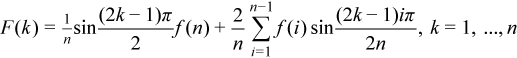

TT routines allow computing the following transforms:
Forward sine transform
Backward sine transform
Forward staggered sine transform

Backward staggered sine transform
Forward staggered2 sine transform

Backward staggered2 sine transform
Forward cosine transform
Backward cosine transform
Forward staggered cosine transform
Backward staggered cosine transform
Forward staggered2 cosine transform
Backward staggered2 cosine transform
Note
The size of the transform n can be any integer greater or equal to 2.